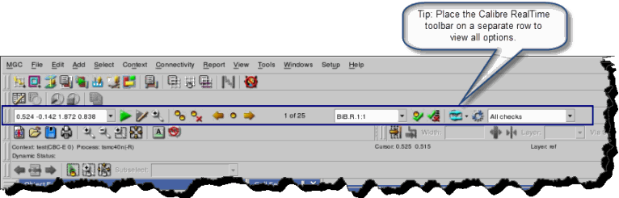

After Pyxis Layout
is open, you enable the Calibre RealTime integrated toolbar and
place it in the Pyxis Layout display.
Procedure
- Add the Calibre RealTime toolbar
to your application view with the Setup
> Toolbar > Calibre RealTime menu. See “Calibre RealTime Integrated Toolbar (Pyxis Layout)” for detailed information on
each section of the toolbar.
- Place the toolbar on its own
row to ensure that all items are visible as shown in Figure 1. Once the toolbar is placed, it will
appear in subsequent invocations of Pyxis Layout.
- Proceed to “Specifying the Rule File, Check Recipe, and Calibre RealTime Options in Pyxis Layout”.
Figure 1. Calibre RealTime Toolbar Placement
Results
The Calibre RealTime toolbar appears
as shown in Figure 1.
The Calibre RealTime toolbar components
are deactivated under the following conditions:
If there is no visible or active
cell open.
If the CALIBRE_HOME environment
variable is not set.
If a DRC rule file is not loaded.
If the cell process is not correctly set.